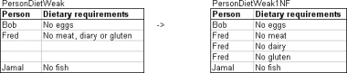
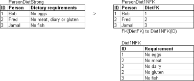
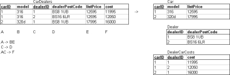
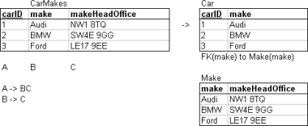

3.2. Normal Forms
In this lecture we look at...
[
Section notes
PDF 121Kb]
3.2.01. Orthogonal design
Information Principle:
The entire information content of the database is represented in one and only one way, namely as explicit values in column positions in tables
Implies that two relations cannot have the same meaning
unless they explicitly have the same design/attributes (including name)
3.2.02. Normalization
Reduced redundancy
Organised data efficiently
Improves data consistency
Reduces chance of update anomalies
Data duplicated, then updated in only one location
Only duplicate primary key
All non-key data stored only once
Data spread across multiple tables, instead of one Universal relation R
3.2.03. Good or bad?
Depends on Application
OLTP (Transaction processing)
Lots of small transactions
Need to execute updates quickly
OLAP (Analytical processing/DSS)
Largely Read-only
Redundant data copies facilitate Business Intellegence applications, e.g. star schema (later)
3NF considered ‘normalised’
save special cases
3.2.04. Normal forms (1NF)
First Normal form (1NF)
Disallows multivalued attributes
Part of the basic relational model
Domain must include only atomic values
simple, indivisible
Value of attribute-tuple in extension of schema
t[A
i
] ∈ (A
i
)
3.2.05. Normalisation (1NF)
Remove fields containing comma separated lists
Multi-valued attribute (A
MV
) of R
i
Create new relation (R
NEW
)
with FK to R
i
[PK]
R
NEW
(UID, A
MV
, FK
I
)
3.2.06. Normalisation (1NF)
On weak entity
On strong entity


3.2.07. Normal forms (2NF)
A relation R
i
is in 2NF if:
Every nonprime attribute A in R
i
is
fully functionally dependent on 1y key of R
If all keys are singletons, guaranteed
If R
i
has composite key are
all non-key attributes fully functionally dependent
on all attributes of composite key?
3.2.08. Normal forms (2NF)
Second normal form (2NF)
Full functional dependency X → Y
A ∈ X, (X - {A}) ¬→ Y
If any attribute A is removed from X
Then X → Y no longer holds
Partial functional dependency
A ∈ X, (X - {A}) → Y
3.2.09. Normal forms (2NF)
In context
Not 2NF: AB → C, A → C
AB → C is not in 2NF, because B can be removed
Not 2NF: AB → CDE, B → DE
because attributes D&E are dependent on part of the composite key (B of AB), not all of it
3.2.10. Normalisation (2NF)
Split attributes not depended on all of the primary key into separate relations

3.2.11. Normal forms (BCNF)
Boyce-Codd Normal form (BCNF)
Simpler, stricter 3NF
BCNF → 3NF
3NF does not imply BCNF
nontrivial functional dependency X → Y
Then X must be a superkey
3.2.12. Normal forms (3NF)
Third Normal form (3NF)
Derived/based on transitive dependency
For all nontrivial functional dependencies
X → A
Either X must be a superkey
Or A is a prime attribute
(member of a key)
3.2.13. Normal forms in context
AB → C, C → D, D → A
In context
3NF? Yes
Because AB is a superkey and
D and A are prime attributes
BCNF? No
Because C and D are not superkeys
(even though AB is)
3.2.14. Normalisation (3NF)
CarMakes not in 3NF because:
singleton key A
non-trivial fd B → C
B not superkey, C not prime attribute

{kind=link}
{kind=link}
{kind=link}
{kind=link}